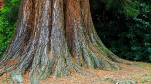
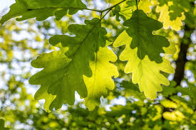

Roots
They begin with roots that anchor them firmly into the soil while absorbing water and essential nutrients. Roots can spread wide or grow deep depending on the tree type, providing stability and ensuring survival during droughts or storms. Some roots, like those of tropical trees, even form buttresses above ground to support massive trunks in shallow soil.

Trunk
The trunk is the main support structure of a tree, holding up branches and leaves while allowing the tree to grow tall. Inside the trunk, specialized tissues—xylem and phloem—transport water, minerals, and food between the roots and leaves. The bark protects the trunk from insects, disease, and environmental damage, while also serving as a habitat for some small animals and insects.
Leaves
Leaves are the food factories of a tree, capturing sunlight to produce energy through photosynthesis. Their shape, size, and arrangement vary by tree type to maximize light absorption and minimize water loss. Deciduous trees often have broad, flat leaves that change color and fall off in winter, whereas coniferous trees have needle-like leaves that retain water and withstand cold climates. Tropical tree leaves are typically large and waxy to handle heavy rainfall, while fruit tree leaves support the growth of flowers and fruits that provide nourishment for humans and wildlife.
